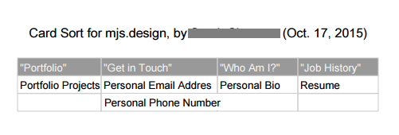

Matthew J. Smith
UX Designer
Toronto
mjs.design draft #2
mjs.design
0.0: Project Overview
Duration: 4+ months, on-and-off, work-schedule dependent
Tools: paper, dry-erase marker, Google Sheets, scanner, AxureRP, Adobe Photoshop, Adobe Illustrator
Deliverables: research, storyboard, persona, competitive audit, card sort, sitemap, lo-fi and hi-fi wireframes
Team Size: 1
My Own Role: UX Designer and researcher, visual designer, web developer
Time to Read: ~20 minutes
0.1: Introduction
In 2015 I decided to develop a portfolio site to showcase my UX-related works and professional development.
I looked at WordPress or Squarespace themes at first; but then thought:
Do I need a robust content management system for 90% greenfield website?
The answer was no. I would be the website’s sole operator - the “webmaster”, as I would come to refer to myself; and ask loved ones to refer to me - and would be able to update it as I produced new, and distributable, works.
I knew how to code; I could write HTML, CSS (and Sass), JavaScript (and jQuery), SQL, etc. through years of professionally (and personally) sitting in front of computers.
So: why not treat my portfolio website like a digital project that I’d manage from start to finish? “strategy” to “surface”?
That’s what I did. I documented the process - and learned a lot through it - so at the end, I decided to include it here as a navel-gazing, self-congratulatory portfolio piece.
As a caveat: this piece is long-winded and (largely) informal.
0.2: The Challenge
Because I wanted to move in to a UX job full-time, I needed a portfolio to showcase my UX chops (what chops they were).
I’d come to UX Design while I was managing a software development project at my old job. I'd been tasked with building an enterprise-level stats program (which can be seen here) and needed perspective on how users who weren’t me interacted with computers and computer software.
I needed to learn. I decided to return to school.
I studied UX Design under Matt Humphreys of T4G Kick and Aaron Bernardo of IBM, both based primarily in Toronto, and found - through assignments and their fantastic instruction - that 1) I loved it; and 2) that I’d been doing UX Design - sans name - for years through different positions and projects.
I wanted to move into it full-time; so I needed to put the works that I’d developed through the years in to a simple-to-use portfolio website that I would:
- conceptualize
- design
- develop
- test
all myself.
As a doomed sea captain might have said once:
“Y'arr, rough seas ahead.”
1.0: Strategy: What I Wanted; What My Users Wanted; and My Competition
There are a lot of approaches to UX. Consider Jesse James Garrett’s “Five Planes”, which I adhered to for this project:
- Strategy: what will users get out of our product? what will we get out of it?
- Scope: what will the product do? what won’t it do?
- Structure: how will the product be organized? how do users get from A to B? what happens after B?
- Skeleton: how will product be laid out? where does the copy go? where does the nav go? how does the experience degrade (for older browsers, different device sizes, etc.)?
- Surface: how will the product look (colour, style of buttons, etc.)?
This is a cursory overview; but those are some of the main points of the “Five Planes”. It’s important to remember too that there should be as much user/stakeholder involvement as is possible (or feasible) at each “plane”.
As the project’s main stakeholder, for my own strategizing, I considered what I wanted to get out of the website, and what I wanted my users to get out of it.
1.1: My Own Goals for the Site:
- To gain employment as a UX professional
- To illustrate to employers that I could be a good asset
- To share information about UX Design and UX Research
1.2: Users’ Goals for the Site:
- To understand simply and quickly how important my skills are to them
- To see visual representations of work that I’d done (for quality)
- To contact me
- To learn more about me, and my past work experience
- To connect with me via social media
1.3: Time and Context
I envisioned my users as time-poor professionals in an office (traditional or mobile) context.
These were people who wouldn’t have time to figure out an interface, or want to look at a lot of superfluous graphics. They would want to see - immediately - who I was, and what projects I’d worked on, my résumé; and if, at that point, their interest was piqued, spend more time to dig down into the expanded portfolio pieces (like the one that you’re reading right now) that were scannable (i.e. imagery, lots of contrast, font family and weight variance, etc.)
The website would need to be perfectly responsive too across browsers/operating systems. I imagined my users receiving an email from me, an interested applicant for a job for which they were hiring, and opening it on their phone or tablet on-the-go.
I envisioned my users as time-poor professionals in an office (traditional or mobile) context.
I like to draw storyboards when I’m thinking about users’ time and context. Storyboards can facilitate user empathy by forcing you (as the designer) to consider when, where, how, etc. a user is coming to use your product, and what benefits they’re seeking from its use.
So: the website needed to be simple, display my UX-related works in an accessible, responsive way, and be time-respectful and context-respectful of my users.
I had my road-map. But before I moved on, I wanted to check out who my competition was; and what their websites looked like based on the ideas that I had for my own.
1.4: Competitor Research
I audited a bunch of UX portfolios.
They (mostly) resembled this image that I threw together in Adobe Illustrator:
Some had strange titles. “USER EXPERIENCE ASTRONAUT”, “INFORMATION BRAIN SURGEON”, etc. The titles these people had given themselves represented, in a sense, bad UX. What does an “Information Brain Surgeon” do?
Below the fold, what usually followed were enormous graphics; pie charts (“40% ADOBE CC KNOWLEDGE… 5% SMILES… etc.”) that didn’t have much to do with the rest of the site’s content.
Hidden amongst the fluff was - sometimes - 1 - 2 images of a Twitter (or other popular app) redesign that they’d done in Photoshop.
These were, for the most part, graphic design portfolios masquerading as UX Design portfolios. A lot of hi-fi mock-ups; but nothing related to research (or even users, a lot of the time), or process.
Do I sound bitter? I hope not; but I looked at so many of these portfolios. In a sense, the competitive audit gave me insight in to what my users - employers - were likely to have experienced while assessing UX candidates for positions.
This competitor research would go on to inform my own designs; and insight into what my users’ process of assessing UX candidates probably looked like led nicely into user research.
1.5: User Research
It shouldn’t come as a surprise that User Experience Design is about users’ experience of products. Will their experience be painful, or joyful? Good, or bad?
Painful experiences lead to bounces; but what does painful mean? Joe, 54, with low tech. knowledge, could find even a “hamburger” navigation painful; whereas Kim, 17, with high tech. knowledge, could find the opposite (that it reduces visual clutter, etc.).
In The Lean UX by Jeff Gothelf, one of my favourite books about UX in general, applies lean manufacturing principles to the UX process and advocates a fast release schedule to solicit user feedback, and then iterating and designing based on that feedback.
Basically: get users involved as early as possible (via testing, interviews, surveys, etc.), and keep involving them throughout the process.
What I like to do early on is do a few information interviews with people representative of my imagined (or desired) users. These are informal, done usually via phone or email, and can be incentivized or not (I find small-denomination Starbucks gift cards to be a beloved option).
What these interviews help me to do is build representative user personas that I can base my designs on. Ideally, I’d test every single change I ever made to a product design with real users; but in an existence of limited resources and unlimited wants, personas fill in a critical gap in the design process, allowing a designer to ask him/herself: would this change work for Joe / Kim / whoever?
I reached out through online and personal networks and connected with three people (via email) who had hired for UX positions in the past.
Basically: get users involved as early as possible (via testing, interviews, surveys, etc.), and keep involving them throughout the process.
I chose not to employ surveys for this part; these were just informal conversations (“what’s the worst part about hiring UX professionals?” etc.) and from them, I built Gavin:
I would refer back to Gavin for the rest of the process. I elected to assume that most - all of my users would be prospective employers; and regardless, non-employer users weren’t, admittedly, my website’s target. Their experience of mjs.design was a secondary consideration at that point. What was important for me to consider was that not all employers would have experienced UX knowledge. I would strive to develop for Gavin; but simplicity - and keeping the site mostly UX jargon-free - would be at the heart of my content strategy, later on in my process.
1.6: Competitive Audit
Because I wasn’t building improvements to an existing website, I instead used competitors’ websites to get an idea of the features that I should focus on.
I had Gavin to consider; but I also asked a colleague who had experience with hiring for tech. positions if she’d act as a prospective employer and do a bit of testing of competitors’ websites with me.
She said no. But then I used a secret research technique of mine - “bribe desired participants with gift cards” - and we began:
I selected 3 portfolio websites for the simple test. I wanted to see how easily my participant could accomplish the following goals with them:
- Get the name and position of the portfolio owner (e.g. Kelly, UX Researcher)
- Find representations of their work; do they seem detailed to you? Why or why not?
- Get contact info., either name or email
I conducted this test at my participant’s home, using her own computer. I'd brought a USB stick with a .pdf that I'd prepared with questions, but discovered - to her surprise even - that her printer had run out of ink; so I wrote out my questions on paper (like a caveman) and she answered after each. The results for one of the websites tested is here (see that I’ve redacted the website’s URL, as well as the name/position of the owner):
It wasn’t formal, solid research by any means; but I was able to use the results as a partial basis for my own designs (re: what to include, what not to include, etc.).
2.0: Scope: What My Portfolio Needed to Do; and What it Didn’t Need to Do
I knew from my research that my users would (likely) be time-poor professionals viewing my portfolio either in a go-go-go office environment or on mobile (in transit, at home, etc.).
I wanted to offer these users a fast, simple experience; and a method to contact me if they wished to (please wish to).
What I needed was:
- A Logo/Brand image which the user can click to return them to the front page
- A Portfolio page with individual portfolio items, each featuring an image related to the item, written copy describing the item, and a button to expand the item into its own page (“See More”, etc.)
- Expanded Portfolio pages for each portfolio item, featuring process, research, content, etc. relevant to it
- An About page with information about me: who I am, my work history (a downloadable .pdf resume, perhaps)
- A Contact page with contact information for me
- A Nav with clickable links for Portfolio, About and Contact
- Social Media links to my various social media feeds/accounts
What I didn’t need was:
- An enormous Hero Image
- Superfluous graphics, animations (increase load times, etc.)
- Infographics related to my skills; I’d either demonstrate them with my work, or I wouldn’t. There was no point wasting my users time with simple statements re: what I could or couldn’t do
So: a lot to consider; but it all would inform my decisions as I advanced into my website’s Information Architecture.
3.0: Structure: the Information Architecture
3.1: Content Audit/Inventory
In general, I’d kick off information architecture with a content audit; but the website was new and there was no internal content to audit.
However: what I did have was a pile of external content that I needed to do an inventory for. I’d done a lot of UX-related work over the last four years, and it all had to be assembled and then the most representative pieces arranged in process order (with a lot necessarily omitted).
This took me some time. I was pleased to have the volume of work that I did to showcase; but poring through years-old documents, notes; hunting down files that I’d emailed to myself or others… it was a labour; but one of love (and some cement).
With the pieces that I was going to use for my portfolio decided on, I refocused on my website’s internal content, and Information Architecture.
3.2: Card Sorting
The website was simple; but I wanted to do a card sort anyway to get a feel for what my users might expect the site’s structure to look like.
I decided to do an open card sort, where I write out the “cards” (which represent pages, files, etc.) and sorters place each card below of categories which they define themselves based on where they would expect to find each card’s content on a finished website.
I reached out to participants that I’d connected with in the Strategy phase and conducted the sorts remotely using Skype (for instructions) and Google Sheets (for the sorts themselves).
(P.S. I had to show one of the participants how to use/share with Google Sheets before they were able to do the card sort. I was able to do this over Skype; but it reminded me about the importance of research method accessibility in user research: just because I’m comfortable with Microsoft Excel/Google Sheets doesn’t mean that my research participants are too.)
I did a few of these to establish patterns. I’ve included two here:
The findings were good: portfolio pieces, contact information, bio, résumé, social media links.
The findings synced-up with my own sense of what the website’s structure should be, too (this doesn’t always happen as a designer; but it’s always nice when it does).
I moved on from card sorts to the sitemap.
3.3: The Simple Sitemap
From the card sort, I decided on three nav items: Portfolio, About, and Contact.
The order of the nav items fit with what I imagined the user flow would be: look at my works, find out more about me - and look at my résumé - and then contact me.
3.4: Development: HTML, CSS and JavaScript (Oh My!)
Before I would create a wireframe, I needed to think about the development of the website itself.
I’d used WordPress and Squarespace to build websites in the past. I liked these options because they were easy and allowed a reasonable amount of freedom. There were also associated tools to track time-on-site, bounce-rate, etc. (always useful metrics).
For mjs.design however, I decided to complete the whole UX Design, graphic design and development process myself. This meant plans, user tests, graphics and would all be built up by yours truly.
It was here that I doffed (doffed means "removed", right?) my designer cap, took it down to my tailor and had him stitch it together with my developer cap, creating a hybrid designer-developer mega-hybrid cap that I would wear for the remainder of my process. It fit me well; like a... well-fitted hat.
As a caveat: UX isn’t really about an ability to code. That being said,I do consider my skills with HTML, CSS (and Sass), JavaScript (and jQuery) to be awesome tools in my toolkit as a UX Designer. I see it in a similar way to how I see graphic design skills as they relate to UX; I don’t strictly need to know how to use Adobe Photoshop, Illustrator, InDesign, After Effects, etc. to be able to be a UX Designer or Researcher; but I’m happy that I do. They help me a lot. I’m able to design, style, code and test my UX designs as a kind of one-stop-shop.
For mjs.design however, I decided to complete the whole UX Design, graphic design and development process myself.
I’m not an “all star” coder - by any means - but I know enough to both a) do some of the work myself; and b) converse intelligently with developers about building interactions and features that I’ve conceptualized for them. I also know a bit better where my limits are (re: budget, time-frame, etc.) in terms of what’s possible and what isn’t for a project.
Anyway, here’s a (simplified) account of how I began: I used a Ruby program that I’d built to generate my project’s file structure, as well as base HTML, Sass, CSS, JavaScript etc. files. I included a Grunt file (Grunt is a JavaScript “task runner”, which means that it can automate a lot of repetitive development tasks) with a Sass “watch” task included, allowing me to develop my Sass files and then have them auto-compiled into CSS (readable by browsers), as well as a task which automatically refreshed my browser after changes were made (which would be invaluable for testing later on).
With these files ready to be developed later, I was then able to move on to sketches and wireframes. Because I would be developing the site myself I could do these without consideration for how they would need to be shoehorned into a pre-built theme (like WordPress, or Squarespace).
4.0: Skeleton: Sketches, Wireframes, and Content Strategy
4.1: Sketches
Before I get started on wireframes, I like to do a bunch iterative designing using either paper or a whiteboard.
I like to think that I’m pretty fast with Photoshop, Illustrator, AxureRP, etc.; but in the time that it takes me to produce designs - even lo-fi designs - in any of them, I could have churned out 5+ designs on paper or a whiteboard. I've included some quick sketches that I did for mjs.design here:
I'd decided to omit a home page altogether, and have the landing page simply be my "Portfolio" page. I reasoned that few users would come upon my website accidently. Most likely, they either: clicked a link from my social media profiles, from an email I'd sent (re: my interest in a UX Designer job) or after a web search for "UX Designer Portfolio", "UX Designer Toronto" (I'd get into AdWords later on), etc.
Before I get started on wireframes, I like to do a bunch iterative designing using either paper or a whiteboard.
Whatever their prompt was, it was likely that they already knew why they were there, or what they were getting into. I didn't need a splash page with a value proposition or funnel copy or whatever: the users would want to see my work, or at least have quick ways to find out more about me, contact me, etc.
The designs were simple: for the large (commonly desktop) screen sizes, I opted for a two column layout with the nav (and block nav items) fixed in the left column. The portfolio pieces could be added in the right column indefinitely (although, so as not to overwhelm users, I was unlikely to ever showcase more than 4 or 5 portfolio pieces). Social media links (to Twitter, etc.) would spread across the bottom of the right column.
For the medium (commonly tablet, or laptop) screen sizes, I opted for a single column, but with the nav spread inline across the top to take advantage of the increased width.
For the small / mobile screen sizes, I opted to tweak the medium / tablet layout; but with the nav items (and social media items) as individual blocks. I could've used a "hamburger" nav menu here, but for just three nav items I felt that it would over-complicate the nav rather than improve the experience for my users.
The responsiveness pattern that I would use was a layout shift (and you can read more about multi-device layout patterns on Luke Wroblewski's page here.)
I used these to develop a paper prototype (a user-testable paper “website”) and tested it with friends.
I gave them very simple user flows and observed their processes:
- look at the third portfolio item
- return to portfolio page; look at the first portfolio item
- contact me (from first portfolio item page)
My friends quickly completed these tests; and seemed angry that I’d gathered them together for such a "simple task".
"simple task" sounded good to me. I think that my user persona, Gavin, would've approved, too. I moved on then to the wireframes.
4.2: Wireframes
I got into AxureRP and produced mobile and desktop wireframes.
I love AxureRP. It can produce a lot of important UX deliverables without a lot of effort, like: user flows, sitemaps, wireframes (low-fidelity and high-fidelity) with notes/annotations. You can even design interactions (which, because my website wouldn’t have complex interactions, I didn’t do here).
I’d set out to make it simple; and thus far, I had succeeded at that.
4.3: Content Strategy
The information that I gathered during my Content Inventory proved invaluable here. I had enough material from UX work that I’d done before that I could built out a strategy for my content - and a copy deck for each page - around it. What I didn’t have, I recreated from notes, emails, etc.
I wanted each piece of content to be a showcase of my abilities; and I wanted the copy to flesh out what was difficult to convey with media content.
I wanted the website’s copy to exude friendliness and youthful professionalism. I am, after all, a friendly young professional.
This is anecdotal - and subjective - but I’ve observed that (successful) modern web copy has a kind of relaxed, humourous flair. As a (small) example, here’s Chrome’s error message on crash:

"Whoa! Google Chrome has crashed. Restart now?"
This is good copy: there’s a kind of friendly relaxedness - suggested by the colloquial "Whoa!" - that kind of blunts my anger (which is important, because my browser just crashed and I was in the middle of a savage online argument about which bear is best).
It then tells me what happened. Assertive. It crashed. Chrome’s average user is unlikely to need more information than that (i.e. “ERROR CODE 0.X3791effff”). It then asks me if I want to restart. No qualification. No jargon. A question that’s easy for me to answer.
I wanted my website to capture that same mood. Friendly. Professional. Young. Assured; but a with a bit of self-deprecation thrown in.
I proceeded through my copy deck with these words in mind.
Length of content was important; a go-to UX article re: content (How Users Read on the Web, by Nielsen Norman Group)
(P.S. I would consider micro-copy (button copy, etc.) when I designed the UI elements later on.)
5.0: Surface: Visual Designs
The project, from a UX perspective, was near-complete. I was now able to move onto visual design.
5.1: Designs
If someone asked me what the best tool in my UX Designer toolkit was, I would tell them:
“A dry-erase marker.”
Then, I’d coolly throw my coat over my shoulder and stride forth into a night-time mist, a noir jazz tune playing somewhere unseen, confident, assured that I had spoken true.
But seriously: I like to do as much work as I can with paper and whiteboards. A tenet of Lean UX is "fail fast, fail often". Test. Do a ton of iterations of your designs. Test again. You improve with each iteration; and almost never is your first idea your best idea. Try, try again.
I based my visual design on my belief in this part of UX; the iterations phase, where the next great idea always lives. I love that.
I decided, then, to build a rough, “sketched” aesthetic; a design that appeared to be a sketched prototype of a website, rather than a slick, done-up, finished website.
If someone asked me what the best tool in my UX Designer toolkit was, I would tell them: “A dry-erase marker.”
To create the effect, I would use the Permanent Marker font and make use of CSS3’s new(ish) border-image property, which allows browsers to use a supplied image as a border (working as users would expect) for portfolio item borders, current and link hover states (made to appear as though they were circled with a marker).
I created a simple border image in Illustrator which I then exported it as a .png file.
I fired off image traces in Illustrator of some of my sketched work, making it appear - with moderate success - as a part of a "page", rather than as a discrete “img”. I gave marker outlines to brand images - and washed them all out a bit - for the portfolio to suggest that they’d been sketched on to paper and then coloured in.
The colours I used were a grey (hex: #464646), a red (hex: #fd6c73), and a blue (hex: #2E3E9A) all marker-ish looking. I didn’t want to use too many colours, as sketched work is not conventionally colourful.
For the background, I added a repeated pattern to give it the look of grid paper. I added a few pen and marker flourishes - small images that I’d sketched in Illustrator - and then gave them absolute positioning at screen sizes over 1168px (I reasoned that tablet and mobile views had less screen real estate; and therefore were more at risk of unnecessary elements causing a “cluttered” look).
I also added a tiny piece of JavaScript to generate the current date as the date of "mjs.design Draft #2" (I added the dash programmatically so that, if a user’s JavaScript was disabled, it will degrade to simply "mjs.design Draft #2")
Each was a small addition: little style choices that aggregated to a cohesive visual design. It was appropriate, I thought; because a lot of good, little design decisions assembled beautifully is what UX Design is all about.
I produced some a-bit-higher-fi wireframes of my concept. I’ve included one of them here:
5.2: Sharing Designs
I showed the designs to four of the participants who I’d connected with before over Skype. I was careful to impress on them the importance of an honest perspective. I’d fostered - to that point - honest communication with them and was hopeful that it would continue.
One commented that the idea behind the designs seemed "too showy". I understood their perspective: an important aspect of UX is the delineation between what’s useful, or innovative, and what’s simply novel-for-the-sake-of. Too much of the latter can distract users from your website’s important - user and stakeholder - objectives.
Lots of good, little design decisions assembled beautifully is what UX Design is all about.
The other three were more positive. One said that the sketched design looked good, and that it reinforced the theme of the website.
To get a better read of the effectiveness of the visual design, I then conducted a small A/B Test over Skype with the same group of four to compare two mobile wireframes, one with the sketched design and one without.
5.3: A/B Test
A/B Tests let participants choose between options; and can be used to test most aspects of UX. In this case, I wanted to get a feel for user reactions to two visual designs (but it can be as specific as reactions between two shades of a button’s copy colour).
I’ve included the two images - of hi-fi mobile wireframes - that I used for the A/B Test here:
The user who had described the visual design as “too showy” preferred Option A, while the others - who had had positive reactions to the sketched aesthetic - preferred Option B.
This was a useful result to me. With 75% I decided to move forward. I thanked each of the participants and paid them in gift cards. It was time for me to write code.
6.0: Development: Code
Because I’d set-up my development environment and file structure in Step 3.4, I was able to get into the HTML and CSS with the visual design still fresh.
I fired up Brackets, which is a code editor that I like. My friends who develop seem to prefer Sublime Text 3, Vim, or Emacs; but Brackets is what I’m comfortable with. As a side-note: I did write some of the code in Vim (which I’m trying to learn to use as it seems to have the potential to speed-up my development workflow by a lot). Here’s an image Brackets (with some of mjs.design’s not-yet-completed code):
I built CSS rules based on the visual designs; and where elements were needed - images, etc. - I built .pngs and .svgs in Illustrator (working to keep file sizes small to ease load times). I wrote these rules in .scss - a file extension for the Sass programming language - which compiles simply to .css.
I built the form for Contact with a combination of HTML (a form), JavaScript (a validation script I integrated), and PHP (more validation, and transmission of the form's POST data to my email). It would be a one button form; just a simple "Submit" (I researched "Cancel" buttons
I tried to keep the code as semantic - and as DRY ("Don't Repeat Yourself") - as I could. I'm sure that I made missteps; but I'll continue to improve the code over time, regardless. The road to improvement is incremental change.
I kept the website in DropBox - to enable me to access it wherever I was - and pushed it to GitHub (though I didn't push as often as I should've) for backups and version control.
6.1: On Sass
I like Sass for a lot of reasons; but one of the main reasons, UX-wise, is the ability to use variables (which aren’t supported in native CSS). So: instead of “color: FF0000” you could set a variable called “$brand_red” equal to FF0000 and then use that instead.
“Variables? Who cares?” you say. Or don’t. I don’t want to put words in your mouth.
But picture this, my friend: you’re a UX Designer with development flair, working on a large-scale web project.
You’ve developed hundreds of CSS stylesheets. You’ve got all of the right fonts. All of the right spacing. All of the right colours. You’re feeling good. Great, even.
But: one of the project’s primary stakeholders shows up at your office with bad news: the board hates the fonts, the spacing, and the colours; and they’ve threatened to pull funding for the project if they aren’t fixed. Uh oh!
No uh oh. Uh awe-some. Why? Because you were clever, and used Sass instead of native CSS. Instead of doing a script, or CTRL-Fing through each stylesheet, to fix each bad value (and hopefully not missing even a single one / not breaking all of your work), you just change the values of your variables and boom: wherever those variables were used - for fonts, spacing, colours; whatever - the values will update accordingly. A process that could’ve been 2 - 3 hours is brought down to 10 or 15 minutes (to make sure that everything still works). And you can imagine what an option like this would do for A/B tests (hot tip: it makes it a lot faster).
With a bit of simple set-up, Sass can compile into CSS automatically too. I use a task-runner called Grunt for this, but there are other solutions too. You can see it here, running in the command line, firing on its own whenever I edit any of my Sass files (which I do a lot, especially when I’m doing any kind of testing).
6.2: Responsiveness
I used media queries (in Sass functions) to create reasonable breakpoints for large, medium and small screen / device sizes.
Because different browsers / devices work differently, I did extensive tests of my designs to ensure that they were as close to universally-responsive was reasonable. I tested in Chrome, Safari, Firefox, Opera, Edge and Internet Explorer, across different devices.
Based on these tests, I determined that the experience was consistent across all browsers... except for Internet Explorer, which displayed the content at a weird "zoom". Users could zoom out (and in) and the breakpoints were functional (i.e. at reduced zoom, the browser displayed the correct "large" layout, etc.) but even after trying deprecated CSS rules (like "zoom" itself), I wasn't able to fix it. I supposed that I could've done so with JavaScript, but it seemed like not a good use of time: it was unlikely to me that employers anywhere that I would be hired would be using Internet Explorer to browse potential candidates' portfolios; and even if they were, the experience wasn't bad anyway; the site could still be used and interacted with at its default zoom level.
I used media queries to create breakpoints for large, medium and small screen / device sizes.
Anyway, I won’t labour over the development anymore - after all, mjs.design isn’t a development portfolio - but I will say that I enjoyed this aspect of the process a ton.
While this website is, as I said at this project’s outset, mostly greenfield, I very much view it as a “living” project: it will be added to, improved, etc. over time (and in response to user feedback).
(P.S. I would get into FTP, AdWords etc. afterwards; but I've decided to omit my experiences with those things for now.)
7.0: Outcomes
You yourself might represent mjs.design's positive outcome.
8.0: What I Learned
I learned how difficult it can be to bring certain designs to life from a developer's perspective. The sketched designs, which I feel are compelling and fit with my theme, were - in some cases - difficult to write, particularly when it came to "border-image" property, which - despite better and better web standards - most browsers still treat differently. What worked in Chrome and Safari wouldn't work in Firefox; and what worked in those wouldn't work in Edge or Internet Explorer. It was a hard dance, at times.
I worry that I might have gone a bit overboard with the theme altogether to where it distracts from the content. Feedback over time will help me decide that; and inform future development.
I have concerns, as well, about the length of the portfolio pieces. Based on research (by Buffer, a social media management firm), the ideal length of blog posts, for engagement, is 1600 words. While my portfolio pieces aren't blog posts, the fact that 1600 is a metric with long-form web content is still useful; and my portfolio pieces are... quite substantially longer.
But: I'll test - and get feedback from recruiters, employers etc., where possible - and change-up if the lengths are detrimental to conversions (i.e. contacts with employers).
All-in-all I enjoyed the challenge of following the entire concept / design / develop / test process myself. It was nice to have control over all of the project's variables and be able to make my own changes in my own time.
However: having that control gave me a renewed appreciation for working on teams. There really isn't a substitute for sharing the weight, and even just the ability to bounce ideas off of colleagues when you're feeling stuck. I didn't have that at all here; and while it's nice to call all of the shots, it's better, I think, to have support and cooperation from other skilled people.